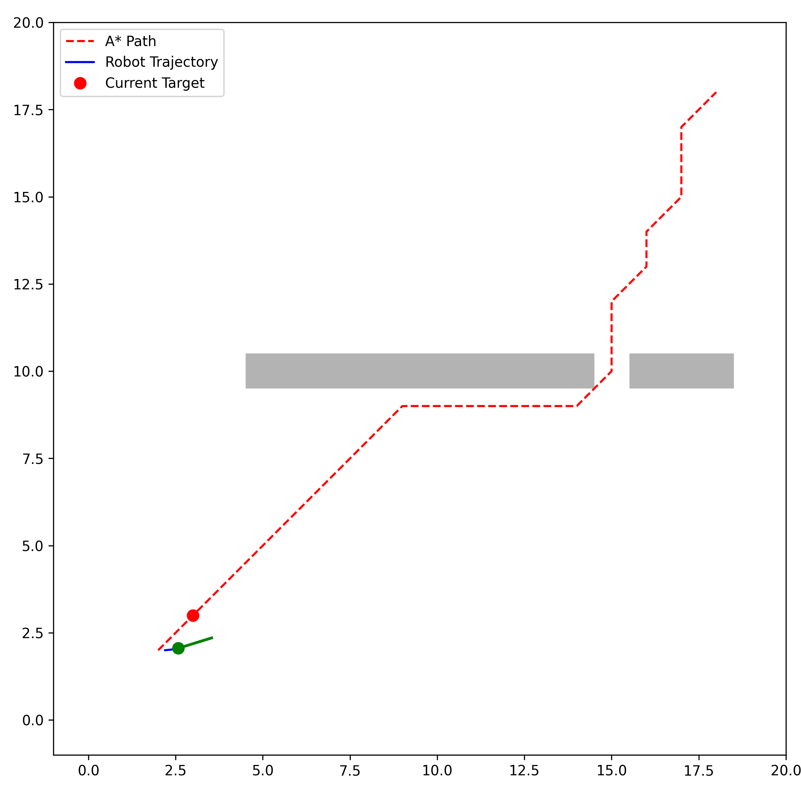
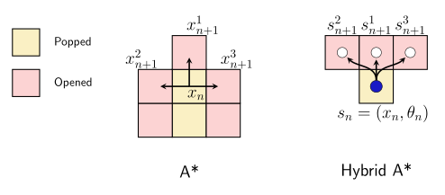
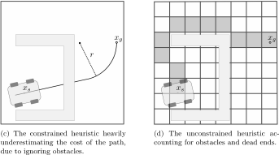
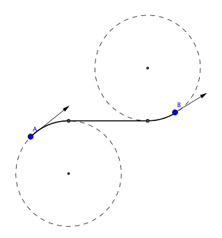
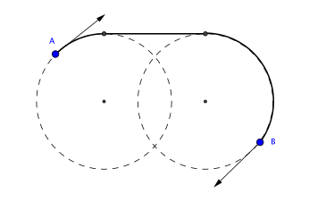
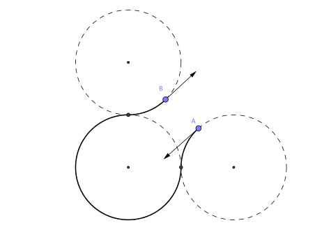
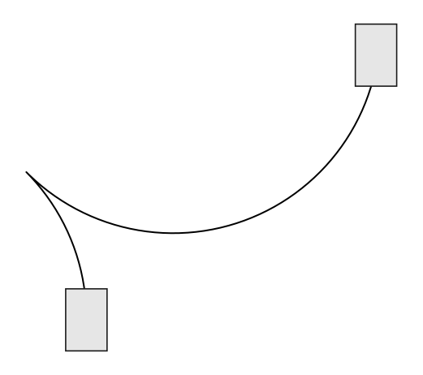
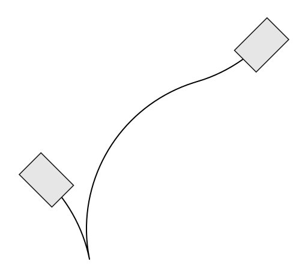

1. SE 423: Introduction to MechatronicsLecture 19: Trajectory planningMarius Juston
Wednesday, April 1st, 2026
Lecture notes
This is the title slide for SE 423, Introduction to Mechatronics, Lecture 19: Trajectory Planning, presented by Marius Juston on Wednesday, April 1st, 2026. The University of Illinois Urbana-Champaign logo sits at the top over a dark blue background of faint hand-drawn math sketches.
Last lecture you planned paths on a grid with A*. Today you move toward paths a real robot can drive: the curse of dimensionality, Hybrid A*, Dubins and Reeds-Shepp curves, and trajectory planning. We start with a short partner review.
2. Review – 5-minute partner discussion
Talk to the person next to you and answer these questions.
- If you had multi-goals that you were trying to reach what would use A*, Dijkstra, Greedy Best First, or BFS? What about a single goal?
- In the previous lecture we performed path planning on a grid graph, what did each vertex in the grid represent (i.e. what was the state space that A* was searching through?)
- What kind robot is most closely represented when you perform path planning with the state only being ?
- For a differential robot, is the movement cost uniform based purely on the position on the robot? The movement cost from
- What is the state space of differential robot?
Lecture notes
This slide opens Lecture 19 with a five-minute partner review of last lecture's path planning. The title reads "Review – 5-minute partner discussion," and the slide asks you to talk with the person next to you and answer five questions. After the five minutes, compare your answers with the ones below.
Question one: if you had multiple goals, would you use A*, Dijkstra, Greedy Best First, or BFS? What about a single goal? For multiple goals, Dijkstra fits well. It expands outward by cost with no heuristic aimed at any one target, so a single run gives shortest paths to every goal. BFS does the same on an unweighted grid. For a single goal, A* with an admissible heuristic is the usual choice because it is optimal and expands fewer nodes. Greedy Best First is fast but not guaranteed optimal.
Question two: on last lecture's grid graph, what did each vertex represent? Each vertex was a cell position, so the state space A* searched was two-dimensional position, (x, y).
Question three: what kind of robot does a state of only (x, y) most closely represent? A holonomic robot, one that can move in any direction from any position, such as an omnidirectional or mecanum-wheel robot.
Question four: for a differential-drive robot, is the movement cost uniform based purely on position? Is the cost from (x, y) to (x+1, y) equal to the cost from (x, y) to (x, y+1)? No. If the robot faces the plus-x direction, driving forward to (x+1, y) is cheap, but reaching (x, y+1) requires turning first. Cost depends on heading, not just position.
Question five: what is the state space of a differential robot? The pose: (x, y, theta). Adding theta is exactly what leads to today's topics, the curse of dimensionality and Hybrid A*.
3. Reminders
Office Hours:
- Monday: 4-6 PM, Neel
- Tuesday: 11-1 PM, Lakshmi
- Tuesday: 1-3 PM, Samuel
- Tuesday: 2-5 PM, Dan & Marius
Lab: Starting Lab 6 this week. This a 3-week lab!
- Don’t forget to have the Lab LabVIEW application implemented before lab.
Homeworks:
- Check-offs for homework 4 Ex 4 are due April 7, 5PM (The end of office hours)
- Remainder of homework 4 due on Gradescope on April 8, 9AM
- Next homework is primarily the personal project due on April 22, 9AM.
-
- I would highly recommend you thinking now and maybe even starting it now if you have a good idea already!
Lecture notes
This slide lists the weekly reminders in three groups: office hours, lab, and homework.
Office hours are Monday 4 to 6 PM with Neel, and on Tuesday: 11 AM to 1 PM with Lakshmi, 1 to 3 PM with Samuel, and 2 to 5 PM with Dan and Marius.
In lab, you start Lab 6 this week, and it is a three-week lab. Have the lab's LabVIEW application implemented before you arrive, so your lab time goes to testing on the robot rather than building the interface.
For homework, the check-offs for Homework 4, Exercise 4, are due April 7 at 5 PM, which is when Tuesday office hours end. The words "homework 4" on the slide are links to the assignment. Plan to get checked off during office hours rather than at the last minute. The rest of Homework 4 is due on Gradescope on April 8 at 9 AM.
The next homework is mainly the personal project, due April 22 at 9 AM. Start thinking about it now, and if you already have a good idea, start working on it. Today's path and trajectory planning material may give you project ideas.
Next, there is time for questions about homework, lab, or LabVIEW before we return to path planning.
4. Questions? (1/2)
Homework, Lab, LabVIEW?
Lecture notes
This slide shows the word "Questions?" in large white text on the dark navy Illinois background, with faint hand-drawn equations and diagrams behind it. Beneath an orange accent line, the subtitle asks: "Homework, Lab, LabVIEW?"
This is your chance to ask about anything from the reminders: homework 4, starting Lab 6, or getting the Lab LabVIEW application ready before lab. Once questions are settled, the lecture moves into path planning. It picks up from last lecture's A* grid search and asks how it applies to a robot that has a heading.
5. Path planning
Lecture notes
This section title slide reads "Path planning" in large dark blue text on an orange background. Faint hand-drawn sketches of equations, a cube, a sphere, and chemical structures decorate the edges; they are only background. The footer reads Systems Engineering and Grainger Engineering, with the Illinois logo in the corner.
This section revisits the A* grid search from last lecture and asks a practical question: can your differential drive robot actually follow the path A* returns? Keep that question in mind as we move toward Hybrid A* and trajectory planning.
6. Path Planning (1/12)
In the previous lecture we explored A* on a 2D grid, where we represented the environment as a graph discrete nodes.
What was the output path returned?
The output path was a sequence of waypoints.
In lecture 15, we however, define the robot’s pose in the global frame which moves using the linear velocity and angular .

Lecture notes
This slide reviews the last lecture and sets up the problem for today. It says that in the previous lecture you explored A* on a 2D grid, representing the environment as a graph of discrete nodes. It then asks what the output path was. The answer: a sequence of (x, y) waypoints.
The figure is a grid map with three gray walls: a tall wall on the left, a wall in the middle, and an L-shaped wall at the upper right. Every open cell holds a small arrow pointing back toward the neighbor it was reached from. These are A*'s "came-from" pointers, and together they form a flow field leading back to the start, a red star-shaped character at left center. The goal, a purple X, sits tucked inside the L. A purple path, traced by following the arrows back from the goal, climbs in stair steps over the middle wall, runs right beneath the L, and wraps around its end to the goal. Notice that the path is made only of horizontal and vertical grid moves with sharp corners.
The bottom of the slide recalls lecture 15. There you defined the robot's pose as p = (x, y, theta) in the global frame: position x and y plus heading theta. The robot moves by commanding a linear velocity V and an angular velocity omega.
This is the mismatch you should notice. A* gives you positions only, with no heading and no timing. The robot needs a heading and can only move along it. Before the next slide, ask yourself what the robot has to do at each of those 90-degree corners in the purple path.
7. Path Planning (2/12)
Standard A* assumes the robot is a "point mass" that can move in any direction!
However, differential drive robots cannot translate sideways! A drone, however, would be fine with this “point mass” definition.
When the path goes from moving "North" to "East", the angle changes by 90 degrees instantly.
This implies an infinite angular velocity at that corner if you are not already facing that direction. What happens to our DC motors if we command an infinite angular velocity?
How can we handle this?
Stop and turn or try tracking the next waypoint.
Lecture notes
This slide is text only, with no figures. It states that standard A* treats the robot as a point mass that can move in any direction. A differential drive robot cannot translate sideways, although a drone would fit the point-mass model fine. When the planned path switches from moving North to moving East, the heading changes by 90 degrees instantly. That implies an infinite angular velocity at the corner unless the robot already faces the new direction. The slide asks what happens to the DC motors if you command an infinite angular velocity, and how to handle it. Its answer: stop and turn, or try tracking the next waypoint.
This builds on the last slide. A* returned a sequence of grid waypoints, but in Lecture 15 the robot's pose is x, y and theta, and it moves only through linear velocity v and angular velocity omega. A grid path ignores that the wheels constrain motion to the direction the robot faces. This is called a nonholonomic constraint.
Now think about the motors. The commanded turn rate is the change in heading divided by the time: omega = delta_theta / dt. With delta_theta = pi/2 and dt going to zero, omega goes to infinity. The motors cannot deliver that. Your PWM duty cycle saturates at its limit, the motor current spikes, the wheels may slip, and the encoder-based pose estimate degrades. A PI speed loop can also wind up and then overshoot.
The first fix is to stop at each corner, rotate in place (a differential drive robot can turn about its center), and then drive straight. It is simple but slow and jerky. The second fix is to let a continuous feedback controller chase the waypoints, which smooths the corners. That is where the next slide goes.
8. Path Planning (3/12)
One common approach is to ignore the robot's kinematics during planning.
- Plan in 2D space using A*.
- Build a continuous feedback controller to "chase" the discrete path.
- We infer the desired heading from the angle between waypoints:
Lecture notes
This slide gives one common answer to the corner problem from the last slide: ignore the robot's kinematics while planning, and let a feedback controller handle them while driving. The slide lists three steps and one equation.
Step one: plan in 2D (x, y) space using A*, exactly as in the previous lecture. The planner treats the robot as a point and returns a sequence of waypoints.
Step two: build a continuous feedback controller that "chases" this discrete path. The planner says where to go. The controller works out how to get there smoothly within what the motors can actually do, so the robot never needs the infinite angular velocity a sharp grid corner would imply.
Step three: A* gives positions but no orientation, so we infer the desired heading theta_r from the angle between consecutive waypoints. The equation reads "theta sub r equals atan2 of delta y, delta x", or theta_r = atan2(Δy, Δx). Here Δx = x_(k+1) - x_k and Δy = y_(k+1) - y_k. For example, moving from waypoint (2, 3) to (2, 4) gives Δx = 0 and Δy = 1, so theta_r = atan2(1, 0) = pi/2, which means facing north.
A common mistake is writing atan(Δy/Δx) instead. That version cannot tell opposite directions apart, since heading west and heading east give the same ratio, and it divides by zero on vertical segments. The function atan2 takes y first and x second, and it returns the full range from -pi to pi. In C on the Red Board, use atan2f(dy, dx).
Quick check: what is theta_r when you move from (5, 5) to (4, 5)?
Next, you express the tracking error in the robot's own frame so the controller can act on it.
9. Path Planning (4/12)
One possible way is to define the error state transformed into the robot's local coordinate frame:
Where , represents the waypoint coordinate from A*.
The kinematic model governing the motion of a unicycle (which accurately represents the center point of a differential drive robot) is:
Lecture notes
This slide sets up the math for chasing the A* path. On the previous slide we inferred a desired heading from the angle between waypoints; now we measure how far the robot is from that reference, expressed in the robot's own frame.
The first equation defines the error state e = [e_x, e_y, e_theta]^T as a 3 by 3 rotation matrix times the world-frame difference between the reference and the robot. Written out:
e_x = cos(theta)*(x_r - x) + sin(theta)*(y_r - y)
e_y = -sin(theta)*(x_r - x) + cos(theta)*(y_r - y)
e_theta = theta_r - theta
Here (x_r, y_r, theta_r) is the waypoint from A*, and (x, y, theta) is the robot's current pose. In words, e_x is how far the target is directly ahead of the robot, e_y is how far it is to the robot's left, and e_theta is the heading error. Why rotate into the local frame? Because the robot's inputs act in that frame. Forward speed v directly shrinks e_x, and turning rate omega changes e_theta. Nothing pushes sideways, so e_y can only be removed by turning and driving.
The second equation is the unicycle kinematic model, which describes the center point of a differential drive robot: x_dot = v*cos(theta), y_dot = v*sin(theta), theta_dot = omega. The inputs are v and omega. On your robot, x, y and theta come from wheel odometry.
A common mistake is forgetting to wrap e_theta into the range -pi to pi. Otherwise the robot may spin almost a full turn instead of a small correction.
Next, a diagram shows these errors geometrically.
10. Path Planning (5/12)
![Diagram: tracking error for a differential-drive robot following a path segment from p sub k (x sub k, y sub k) to p sub k plus 1 (x sub k plus 1, y sub k plus 1). The segment makes angle theta sub r with the X axis, and its endpoint is the reference (x sub r, y sub r, v sub r, omega sub r). The robot sits at (x, y) with heading theta. Vector d equals x sub r minus x, y sub r minus y points from robot to target and splits into e sub x along the robot's x axis and e sub y along its y axis. e sub theta is the angle between robot heading and path direction.](L19_files/05e5ea11b3ed.svg)
Lecture notes
This slide is a picture of the error definition from the previous slide. Axes X and Y show the world frame. A gray line labeled "Path segment" runs from waypoint p_k at (x_k, y_k) in the lower left to waypoint p_(k+1) at (x_(k+1), y_(k+1)) in the upper right. An arc at p_k marks theta_r, the angle of that segment from the X axis. The endpoint p_(k+1) is also labeled as the reference state (x_r, y_r, v_r, omega_r).
The robot is drawn as an ellipse with two wheels at (x, y), heading theta measured from the X axis. Its local axes, x_robot and y_robot, are drawn in gray. A blue vector d = [x_r − x; y_r − y] points from the robot to the reference. Dashed projection lines split d into two components. The component along the robot's forward axis is e_x. The component along its sideways axis is e_y. A curved arrow labeled e_theta is the angle between the robot's heading and the path direction.
In equation form, the projections are a rotation of d by negative theta:
e_x = cos(theta)*(x_r − x) + sin(theta)*(y_r − y)
e_y = −sin(theta)*(x_r − x) + cos(theta)*(y_r − y)
e_theta = theta_r − theta
Why use the robot frame? Because e_x reads directly as "how far ahead is the target" and e_y as "how far to my left." Those map naturally onto the two inputs a differential drive has, forward speed v and turn rate omega.
A common mistake is to forget the rotation and feed the world-frame differences straight into the controller. Another is to not wrap e_theta to the range −pi to pi.
Next, you differentiate these errors with the unicycle model to get the error dynamics.
11. Path Planning (6/12)
Taking the time derivative of this error vector and substituting our kinematic equations yields the open-loop error dynamics:
To generate control actions that guarantee the robot will converge to the path, we can utilize a non-linear feedback tracking controller (originally proposed by Kanayama et al.).
We propose the following control law using positive gain constants :
Lecture notes
This slide derives how the tracking error evolves and then proposes a controller that drives it to zero. It shows three error equations. The derivative of e_x is omega times e_y, minus v, plus v_r times cosine of e_theta: e_x_dot = omega*e_y - v + v_r*cos(e_theta). The derivative of e_y is minus omega times e_x plus v_r times sine of e_theta: e_y_dot = -omega*e_x + v_r*sin(e_theta). The derivative of e_theta is omega_r minus omega: e_theta_dot = omega_r - omega.
These are the "open-loop" error dynamics: they describe how the error changes for any commands v and omega, before you choose a control law. The omega*e_y and -omega*e_x terms appear because the error is measured in the robot's rotating local frame from the previous slide. When the robot turns, the target appears to swing around it.
The slide then gives the Kanayama et al. nonlinear tracking controller, with positive gains K_x, K_y, K_theta > 0. The first command is v = v_r*cos(e_theta) + K_x*e_x. The second is omega = omega_r + v_r*(K_y*e_y + K_theta*sin(e_theta)).
Each command has two parts. The feedforward part, v_r and omega_r, is what the path itself asks for. The feedback part corrects the error. If the target is ahead of you, so e_x > 0, the robot speeds up. A lateral error e_y is corrected by turning, not by sliding sideways, because a differential-drive robot is nonholonomic. That correction is scaled by v_r, since steering only reduces a sideways error while you are moving.
Substituting the controller back in, the first error equation becomes e_x_dot = omega*e_y - K_x*e_x. The heading equation becomes e_theta_dot = -v_r*(K_y*e_y + K_theta*sin(e_theta)).
A common bug on the robot is forgetting to wrap e_theta into the range -pi to pi before using it. The next slide uses a Lyapunov function to prove this controller converges.
12. Path Planning (7/12)
With non-linear control stability theory (Lyapunov), you can prove that the previously provided controller will converge to the path.
You can define a positive-definite Lyapunov candidate function
We must prove that its time derivative is negative semi-definite. Taking the derivative:
I will leave as an exercise to you to verify that as long as and . The error states asymptotically converge to zero.
Lecture notes
This slide answers the question left open on the previous one: how do you know the Kanayama tracking controller actually drives the robot onto the path? The tool is Lyapunov stability theory from nonlinear control.
The slide defines a positive-definite Lyapunov candidate function of the error vector e. In words, V equals one half times the quantity e_x squared plus e_y squared, plus one minus cosine of e_theta, all divided by K_y. In plain text: V = (1/2)*(e_x^2 + e_y^2) + (1 - cos(e_theta))/K_y. Think of V as an "error energy." Each term is never negative, and V equals zero only when e_x, e_y and e_theta are all zero, with e_theta taken between minus pi and pi. That is what positive definite means here.
Next, the slide states that you must show the time derivative, V dot, is negative semi-definite, meaning it is never positive, so the error energy can never grow. The derivative reads: V dot equals e_x times e_x dot, plus e_y times e_y dot, plus sine of e_theta over K_y times e_theta dot. In plain text: V_dot = e_x*e_x_dot + e_y*e_y_dot + (sin(e_theta)/K_y)*e_theta_dot.
The slide leaves the rest as an exercise. Substitute the closed-loop error dynamics from the previous slide into this expression. The e_y cross terms cancel, and only terms that cannot be positive remain. The slide concludes that the error states converge asymptotically to zero as long as K_x, K_y and K_theta are greater than zero and v_r is greater than zero.
A common oversight is the v_r > 0 condition. A reference that is stopped cannot pull out lateral error, because a differential-drive robot cannot slide sideways.
Next, you see what can go wrong when this proven controller follows a jagged planner path.
13. Path Planning (8/12)
So, we have decoupled the control from the robot’s planner. However, doing so we could have potential problems. What might they be?
When inferring from a jagged grid path, the reference heading is discontinuous.
This creates sudden spikes in heading error ().
The feedback controller saturates the motors trying to fix the error.
The robot swings wide around corners, potentially crashing into obstacles the planner thought were safe.
The path planner does not understand the robot’s kinematics when planning!
Lecture notes
This slide is text only, under the title "Path Planning." It opens with a question: we have decoupled the controller from the planner, so what problems could that cause? It then answers in a chain of five statements. First, when you infer theta from a jagged grid path, the reference heading theta_r (theta sub r) is discontinuous. Second, this creates sudden spikes in the heading error, e_theta (e sub theta). Third, the feedback controller saturates the motors trying to fix that error. Fourth, the robot swings wide around corners and can crash into obstacles the planner thought were safe. Fifth, the slide concludes that the path planner does not understand the robot's kinematics when planning.
On the previous slides you saw the Kanayama tracking controller and its Lyapunov proof that the tracking errors converge to zero. That proof assumes a smooth reference. A grid planner such as A* gives you waypoints, and you usually compute the heading between consecutive waypoints as theta_r = atan2(y_(k+1) - y_k, x_(k+1) - x_k). On an 8-connected grid, that heading can only take multiples of 45 degrees, so at every corner theta_r jumps instantly, for example from 45 degrees to 90 degrees. The error e_theta = theta_r - theta jumps by the same amount. The controller then demands a huge angular velocity. The motors cannot deliver it, so the command clips at its limit. While it is clipped, the robot keeps moving forward and overshoots the corner.
The root cause is that the planner treats the robot as a point that can turn in place instantly. Your differential-drive robot cannot. A common bug makes this worse: forgetting to wrap e_theta into the range -pi to pi, which can produce a 350-degree "spin" instead of a 10-degree correction.
Quick check: on a 4-connected grid, what is the largest heading jump at a corner? The next slide shows exactly this zigzag behavior in simulation.
14. Path Planning (9/12)

Lecture notes
This slide shows a simulation of the decoupled approach from the last few slides. The plot is a 20 by 20 map with a horizontal wall along y = 10. The wall has one narrow gap near x = 15. The A* path, drawn as a red dashed line, starts at (2, 2) and runs diagonally to (9, 9). It then follows y = 9 just under the wall out to x = 14, passes up through the gap, and zigzags with diagonal and vertical steps to the goal at (18, 18). The robot is drawn in green with a short line showing its heading. It has just left the start and is steering toward its current target waypoint at (3, 3).
The key idea is that the planner and the controller are separate. A* produces a list of grid waypoints with no knowledge of the robot. The feedback controller from the previous slides then chases one waypoint at a time. When the robot gets close to its target, the target advances to the next point on the path.
Watch the corners, especially at (9, 9) and around the gap. As slide 13 warned, the reference heading jumps there by 45 degrees or more. The heading error spikes, the motors can saturate, and the robot swings wide. Here that means it could clip the wall near the narrow gap, even though the planner considered the path safe.
Quick check: where on this path would you expect the largest heading error, and why?
Next, we give this target-chasing strategy its name, Pure Pursuit.
15. Path Planning (10/12)
This decoupled controller, which pursues a target point and has the controller constantly chasing after it is called Pure Pursuit
There are other ways of implementing the trajectory following, among which we will talk about below. Some other ways revolve around solving optimization problems.
Lecture notes
This slide is text only, with no figures. It gives a name to the controller from the last two slides: a decoupled controller that pursues a target point on the path, constantly chasing it, is called Pure Pursuit. It also notes that there are other ways to do trajectory following, some of which come later in this lecture, and that some of them are built around solving optimization problems.
In the animation on the previous slide, the green robot steers toward its current target waypoint at (3, 3), and the target keeps moving along the red A star path as the robot advances. The robot never quite reaches the target. It only turns its heading toward it and drives. That is the essence of Pure Pursuit. It is simple and cheap to compute, so it suits a microcontroller like the Red Board. Its weakness is the one from slide 13: the planner has no idea how the robot actually moves, so sharp corners in the grid path produce heading-error spikes and wide swings.
A common mistake is choosing how far ahead the target point sits without thinking about the trade-off. If the target is too close, the robot reacts to every jag in the path and oscillates. If it is too far, the robot cuts corners, possibly through an obstacle the planner avoided.
Optimization-based followers, such as model predictive control, instead choose control inputs by minimizing a cost over a short horizon, subject to the robot's dynamics.
Next, rather than only patching the controller, we make the planner itself aware of the robot's heading.
16. Path Planning (11/12)
To fix this, the planner must understand the robot's physical heading.
We must expand our search state from 2D to 3D .
The robot now searches through positions and orientations! A state transition is no longer just moving to an adjacent grid cell.
We can discretize into bins (e.g., 8 directions, 16 directions).
From a state , valid moves might be "drive forward at " or "turn to and drive".
Given that we have the state , we can give a penalty for between states to make robots move less.
This ensures the path considers the robot's current orientation. However, true non-holonomic robots don't just "turn and drive"—they curve.
Lecture notes
This slide is text only. It proposes the fix for the problem from the last few slides: the A* path we followed with pure pursuit ignores which way the robot is pointing, so the path zigzags and the controller has to keep chasing waypoints. To fix this, the planner itself must understand the robot's physical heading.
The key move is to expand the search state from 2D, the pair (x, y), to 3D, the triple (x, y, theta), where theta is the robot's orientation. The planner now searches through positions and orientations. A state transition is no longer just a step to an adjacent grid cell; it also has to say which way the robot faces.
To keep the search finite, theta is discretized into bins, for example 8 directions (every 45 degrees) or 16 directions (every 22.5 degrees). From a state (x, y, 0 degrees), valid moves might be "drive forward at 0 degrees" or "turn to 45 degrees and drive."
Because theta is now part of the state, you can add a penalty on delta theta, the change in heading between two states, to the path cost. A* then prefers paths that turn less and avoids needless zigzags. A common mistake is to add the heading to the state but leave the cost unchanged, which gives back the same wiggly paths.
This makes the path respect the robot's current orientation. But the slide flags a limitation: real non-holonomic robots like our car-like or differential-drive robot do not just turn and then drive; they curve. That idea leads to Hybrid A* later. The next slide shows this 3D search space as stacked heading layers.
Quick check: with 8 heading bins, how many states does a 10 by 10 grid have? (800.)
17. Path Planning (12/12)
![Plot: Three-dimensional configuration space for robot path planning, with X and Y position axes from 0 to 6 and orientation theta as the vertical axis, stacked as three grid layers at 0, 90 and 180 degrees. A path runs from Start (1, 1, 0 degrees) to Goal (5, 5, 0 degrees). Horizontal segments within a layer are moves between grid cells, and vertical segments are turns in place to the next orientation. The path climbs from the 0-degree layer through 90 degrees to the 180-degree layer, where the goal marker is drawn even though it is labeled 0 degrees.](L19_files/c815a30d3f87.svg)
Lecture notes
This slide visualizes the 3D search space from the previous slide. It is a three-dimensional plot: the horizontal axes are X position and Y position, each running from 0 to 6, and the vertical axis is orientation theta. Three stacked grid layers sit along that vertical axis: a blue layer at theta_0 = 0 degrees, a green layer at theta_1 = 90 degrees, and a red layer at theta_2 = 180 degrees. Each layer is a copy of the 2D occupancy grid at one heading.
A black path with arrows starts at a blue X labeled Start (1, 1, 0 degrees) on the bottom layer. It alternates between two kinds of moves. Horizontal segments stay within one layer and drive the robot between grid cells at its current heading. Vertical segments keep x and y fixed and change only theta, which is a turn in place. The path climbs from 0 degrees up to 90 degrees, crosses the green layer, climbs again to 180 degrees, and ends at a red circled marker labeled Goal (5, 5, 0 degrees). Note that the goal marker is drawn on the 180-degree layer even though its label says 0 degrees.
The key idea is that in this space every vertical step is a separate state transition. That is why the turn penalty from the previous slide matters: each climb between layers costs something, so A* prefers paths with fewer turns.
Quick check: how many states does this small grid have with three layers? With 8 or 72 layers? That question leads directly into the curse of dimensionality on the next slide.
18. The Curse of Dimensionality (1/2)
Adding dramatically increases the search space.
If a 100x100 grid has 10,000 states in 2D discretizing into 72 angles (every 5 degrees) yields 720,000 states!
How does this affect the memory and compute time required for A*?
Every time you add a dimension you increase the number of possibilities exponentially!
This phenomenon is called the Curse of Dimensionality and is a problem is a lot of applications of math!
There is no way to escape this problem!
Lecture notes
This slide puts a number on what the 3D search space from the previous slide costs. It is all text, with the title "The Curse of Dimensionality" and a short chain of statements ending in a question for you.
The slide says that adding theta, the robot's heading, dramatically increases the search space. A 100 by 100 grid has 10,000 states in 2D. If you discretize theta into 72 angles, one every 5 degrees, the state count becomes 100 * 100 * 72 = 720,000 states. That is 72 times more.
The slide then asks how this affects the memory and compute time required for A*. Think about what A* stores for every state it touches: a cost-so-far g, a parent pointer, and membership in the open list or closed set. All of that scales with the number of states. Each expansion also has to check neighbors, so run time grows with both the number of states and the number of moves per state. On a microcontroller-class processor, or with a tight replanning deadline on the robot, a factor of 72 matters.
The general rule on the slide is that every added dimension multiplies the number of possibilities. With n bins per dimension and d dimensions, you have n^d states, so growth is exponential in the number of dimensions. This is the Curse of Dimensionality. The slide notes that it shows up in many areas of math, and that there is no way to escape it. You can only manage it.
Quick check: if you add velocity with 10 bins on top of x, y and theta, how many states do you get? (7,200,000.)
That cost is why the next slide asks when plain 2D planning is still good enough.
19. The Curse of Dimensionality (2/2)
Before we commit to heavy 3D planning, let's establish when 2D is acceptable:
- 2D planning works well for omnidirectional robots (Mecanum wheels).
- It also works for very slow differential drive robots in wide-open spaces (you can have 8-connected neighbors and tune your controller to minimize edge clipping).
It fails catastrophically for cars (Ackermann steering) or robots in tight, cluttered corridors.
Lecture notes
This slide is text only. It opens with: before we commit to heavy 3D planning, let's establish when 2D is acceptable. Two cases follow where 2D works. First, omnidirectional robots, such as robots on Mecanum wheels. Second, very slow differential drive robots in wide-open spaces, where you can use 8-connected neighbors and tune your controller to minimize edge clipping. The slide then states that 2D planning fails catastrophically for cars with Ackermann steering, and for robots in tight, cluttered corridors.
On the last slide you saw that adding heading turns a 10,000-state grid into 720,000 states. So the practical question is when you can skip theta entirely.
The answer depends on whether heading constrains motion. A Mecanum robot is holonomic: it can translate in any direction regardless of where it faces, so position and orientation are decoupled. You plan in x and y and handle theta separately. A differential drive robot can turn in place, so it can follow any grid path by stopping and rotating at corners. 8-connected means each cell links to its four edge neighbors and its four diagonals. "Edge clipping" is when the real robot cuts a corner while following that path and grazes an obstacle. Slow speeds, a well-tuned controller, and inflated obstacles keep that error small.
A car cannot turn in place. Its minimum turning radius makes the sharp corners of a 2D grid path physically impossible to follow. In tight corridors, the robot's footprint and heading decide whether it fits at all.
Quick check: why does a 90-degree corner in a grid path break a car but not a differential drive robot? This motivates Hybrid A*, next.
20. Hybrid A* (1/6)
Lecture notes
This is a section title slide. It reads "Hybrid A*" in large dark blue letters on the orange Illinois background, with faint hand-drawn math and chemistry sketches as decoration.
We just saw the curse of dimensionality: adding heading theta to a 100 by 100 grid turns 10,000 states into 720,000. We also saw that plain 2D A* fails for cars and tight corridors. Hybrid A* keeps the heading but expands nodes by simulating drivable motions instead of jumping between grid cells. The next slides show exactly how.
21. Hybrid A* (2/6)
Instead of expanding to adjacent grid cells, Hybrid A* simulates the kinematics.
It applies a set of discrete control commands for a short time step .
The end points of these simulated curves become the new child nodes.
For differential drive robots, we can also command and . This allows the robot to turn in place (a zero-point turn). Hybrid A* can include these zero-point turns as valid node expansions.
Why might we want to assign a high "cost penalty" to zero-point turns in our algorithm?
Lecture notes
This slide shows the core change that makes Hybrid A* different from ordinary A*. The text says that instead of expanding to adjacent grid cells, Hybrid A* simulates the robot's kinematics. It applies a set of discrete control commands (V, omega), a forward speed V and a turn rate omega, for a short time step delta t. The end points of these simulated curves become the new child nodes. For differential drive robots you can also command V = 0 with omega not equal to 0, which turns the robot in place (a zero-point turn), and Hybrid A* can include these as valid expansions. The slide ends with a question: why might we give zero-point turns a high cost penalty?
The previous slide showed that 2D grid planning fails for cars and for tight corridors. This is the fix. Each command is a motion primitive. For example, you might use full left, straight, and full right at a fixed V. You integrate the unicycle model over delta t: x_(t+1) = x_t + V*cos(theta_t)*dt, y_(t+1) = y_t + V*sin(theta_t)*dt, theta_(t+1) = theta_t + omega*dt. Every child is reachable by construction because the robot actually drove there in simulation.
Think about the question before reading on. Turning in place is legal, but it is expensive in practice. The robot must stop and rotate, which wastes time and breaks smooth motion. The wheels scrub and slip, so your encoder odometry degrades. If heading changes are free, the planner will happily produce jerky stop-spin-go paths. A penalty keeps zero-point turns available as a last resort in tight spots without making them the default.
Next, you see how these continuous child states are stored on a grid.
22. Hybrid A* (3/6)
Hybrid A* uses a discrete 3D grid purely for spatial hashing (to know if an area was visited). However, the actual coordinates stored in the nodes are continuous floating-point values.
This guarantees that the generated path is physically drivable and continuous (smooth).There are no impossible 90-degree instantaneous turns!

Lecture notes
Slide 22 shows the key implementation detail of Hybrid A*: how a continuous robot state is stored on a discrete grid.
The text makes two points. First, Hybrid A* uses a discrete 3D grid over (x, y, theta) purely for spatial hashing, meaning it only uses the grid to know whether an area has already been visited. The coordinates stored inside each node are continuous floating-point values. Second, this guarantees the path is physically drivable and C^1 continuous (smooth), with no impossible 90-degree instantaneous turns.
The figure compares the two algorithms. A legend shows yellow for "popped" cells and pink for "opened" cells. On the left, labeled A*, the popped cell x_n sits in a grid, and straight arrows point to the centers of the cells above, left and right, labeled x_(n+1) with superscripts 1, 2 and 3. On the right, labeled Hybrid A*, a blue dot marks the state s_n = (x_n, theta_n) somewhere inside a yellow cell. Three curved arcs (left, straight and right) lead to white dots s_(n+1) inside the three cells ahead. These dots are not at the cell centers.
Here is how the hashing works. You round each continuous state to a cell index (i, j, k), where k is a heading bin. If a new child lands in a cell that is already closed, you discard it, or replace the stored node if the new one is cheaper. The real (x, y, theta) is still what you simulate from next.
C^1 continuous means that both position and its first derivative, the heading, never jump. That is exactly what a car or a differential-drive robot can follow.
A common mistake is to snap the child node to the cell center. Doing that brings back the jagged A* paths you saw earlier.
One trade-off to note: pruning by cell means Hybrid A* is no longer guaranteed optimal or complete.
Next, we look at how each node's cost is computed from the arc lengths.
23. Hybrid A* (4/6)
Computing the cost of each state is relatively similar. We determine the cost by considering the length of the arcs between and
Lecture notes
This slide covers how Hybrid A* computes the cost of each new state. The text reads: "Computing the cost of each state is relatively similar. We determine the cost by considering the length of the arcs between s_n and s_(n+1)."
The figure repeats the comparison from the previous slide. A legend on the left marks yellow cells as "Popped" and pink cells as "Opened." In the A* diagram, the popped cell x_n sits in a vertical column of yellow cells, with pink cells on either side. Straight arrows run from x_n to the centers of the cells above, left and right, labeled x_(n+1) with superscripts 1, 2 and 3. In the Hybrid A* diagram, the popped state s_n = (x_n, theta_n), a position plus a heading, is a blue dot in a yellow cell. Three curved arrows, bending left, going straight and bending right, end at white dots in the three pink cells above, labeled s_(n+1)^2, s_(n+1)^1 and s_(n+1)^3.
The cost bookkeeping is the same idea as A*: the cost-to-come of a child is the parent's cost plus the cost of the step, g(s_(n+1)) = g(s_n) + cost(s_n to s_(n+1)). In grid A*, the step cost is the distance between cell centers. In Hybrid A*, the step cost is the length of the driven curve. For a straight primitive, that length is v*dt. For a circular arc of radius R that changes heading by delta_theta, the length is R*|delta_theta|.
A common mistake is to use the straight-line distance between the endpoints, which slightly undercounts the length of curved steps.
Quick check: what is the arc length of a zero-point turn? It is zero. This is why the previous slide asked about adding a penalty; without one, turning in place looks free.
Next, you see this expansion run on a full map.
24. Hybrid A* (5/6)
![Hybrid A* search on an occupancy grid with a large square obstacle in the center and a horizontal bar obstacle at lower right. From start S at top left, facing right, the search expands a tree of short motion primitives (straight segments and left and right turning arcs) that spreads around both sides of the large obstacle. The final smooth, drivable path curves from S, runs diagonally past the left and lower side of the large obstacle, then turns to run straight right beneath the bar to goal G, arriving with the required rightward heading.](L19_files/452ccb0be6e7.svg)
Lecture notes
This slide is a single figure showing a complete Hybrid A* search. The background is an occupancy grid with two dark obstacles: a tall rectangular block in the center and a long horizontal bar at the lower right. A green start marker, S, sits near the top left with the vehicle facing right. An orange goal marker, G, sits at the bottom right, with a short line showing that the vehicle must arrive facing right.
The purple tangle is the search tree. Each purple stroke is one motion primitive: a short straight segment or a left or right arc at the vehicle's turning radius, expanded from a continuous state (x, y, theta). The tree is densest near the start and spreads around both sides of the central block before reaching the goal. The red dashed line is the final path. It curves gently out of S, runs diagonally down past the left and lower side of the big obstacle, bends under it, and runs straight right beneath the bar into G with the required heading. It has no sharp corners anywhere, which is the payoff from storing continuous states, as the previous two slides explained.
Look at how much purple there is compared with how little red. Hybrid A* spends most of its effort on expansions that never make it into the final path, and every expansion means integrating a kinematic arc. That cost is why the next slide argues that Hybrid A* needs very strong heuristics.
Quick check: why does the tree also grow down the right side of the central block, even though the final path goes left? The cost estimates on both sides look similar to the search. A better heuristic prunes that wasted work.
25. Hybrid A* (6/6)
Because expanding kinematic curves is slow, Hybrid A* needs incredibly strong heuristics.
It uses a combination of two heuristics:
- The Non-Holonomic Heuristic (ignores obstacles, respects turning radius).
- The Holonomic Heuristic (respects obstacles, ignores turning radius).
The algorithm takes the maximum of these two values.
Lecture notes
This slide explains how Hybrid A* guides its search. The text says that because expanding kinematic curves is slow, Hybrid A* needs very strong heuristics. It combines two of them. The non-holonomic heuristic ignores obstacles but respects the turning radius. The holonomic heuristic respects obstacles but ignores the turning radius. The algorithm takes the maximum of the two, shown by the equation f(n) = g(n) + max(h_1, h_2), read "f of n equals g of n plus the maximum of h one and h two."
Recall from the last two slides that every expansion in Hybrid A* simulates drivable arcs and checks them for collisions. That costs far more than stepping to a neighboring grid cell, so you cannot afford to expand nodes that lead nowhere. A heuristic is the estimate of the remaining cost to the goal. The closer that estimate is to the true cost, the fewer nodes A* has to expand.
Each heuristic drops one constraint, so each one is an optimistic lower bound on the real cost. The real path has to avoid obstacles and obey the turning radius at the same time, so it is at least as long as either estimate. Taking the maximum therefore keeps the estimate admissible, meaning it never overestimates, and gives the tightest bound available at each node.
A common mistake is to add the two heuristics together. The sum can overestimate the remaining cost and break A*'s optimality guarantee.
Quick check: which heuristic dominates when the robot sits in a dead end, and which dominates when the goal requires a sharp heading change? The next two slides cover each heuristic in turn.
26. Hybrid A* - Holonomic Heuristic (Obstacle Aware)
This is simply a standard 2D grid A* (or Dijkstra's) running in the background!
It calculates the distance to the goal avoiding all walls.
It prevents the kinematic search from getting stuck in dead ends. Because it's 2D, it computes very quickly.

https://kth.diva-portal.org/smash/record.jsf?pid=diva2%3A1057261&dswid=4852
Lecture notes
Slide 26 zooms in on the first of the two Hybrid A* heuristics from the previous slide: the holonomic, or obstacle-aware, heuristic. The text says it is simply a standard 2D grid A* (or Dijkstra's) running in the background. It calculates the distance to the goal while avoiding all walls. It keeps the kinematic search from getting stuck in dead ends, and because it is only 2D, it computes very quickly.
The figure, from a KTH thesis (link at the bottom of the slide), has two panels. In each, a car at start x_s sits inside a U-shaped obstacle that opens to the left, and the goal x_g is to the upper right. Panel (c), on the left, shows a curve with minimum turning radius r that drives straight through the obstacle wall to the goal. Its caption says this constrained heuristic heavily underestimates the cost because it ignores obstacles. Panel (d), on the right, is outlined in red because it is the subject of this slide. A grid overlays the map, and shaded cells trace a path out of the open side of the U, across the top, and right to the goal. Its caption calls it the unconstrained heuristic, which accounts for obstacles and dead ends.
"Holonomic" means the heuristic pretends the robot can move in any direction, so it ignores heading and turning radius. A common implementation runs Dijkstra once, backward from the goal, over the occupancy grid. This stores a cost-to-go for every cell, so each later heuristic lookup is just a table read. Without it, the search would keep expanding curves toward the goal and into the trapped U.
Quick check: why can't this heuristic be used alone? Because it ignores heading, which is what the next slide's turning-aware heuristic adds.
27. Hybrid A* - Non-Holonomic Heuristic (Turning Aware)
This heuristic ignores all obstacles but calculates the mathematical shortest path for a vehicle with a minimum turning radius.
If the robot needs to arrive at the goal facing a specific direction, it computes the required curves.
These optimal obstacle-free paths are called Dubins curves or Reeds-Shepp curves.
https://kth.diva-portal.org/smash/record.jsf?pid=diva2%3A1057261&dswid=4852
Lecture notes
This slide returns to the same two-panel figure from the previous slide, but now a red box highlights the left panel, the turning-aware heuristic. The text says this heuristic ignores all obstacles but computes the mathematically shortest path for a vehicle with a minimum turning radius. If the robot must arrive at the goal facing a specific direction, the heuristic computes the curves needed to do that. These optimal obstacle-free paths are called Dubins curves or Reeds-Shepp curves.
In the highlighted panel, the car sits at the start x_s inside a U-shaped obstacle that opens to the left. The heuristic path runs straight out of the car, cuts right through the obstacle wall, then bends along an arc of radius r to reach the goal x_g at the upper right. The caption notes that this badly underestimates the true cost because it ignores obstacles. The right panel, which we covered last slide, shows the grid-based holonomic heuristic escaping the U through its open side.
Why use a heuristic that drives through walls? Because it captures something the grid heuristic misses: heading. A goal directly behind the car looks close on a grid, but the car may need a long loop to turn around. This heuristic is admissible because no real path can beat the obstacle-free optimum, and it is often precomputed as a lookup table. Taking the maximum of the two heuristics stays admissible while being much more informed than either alone.
Quick check: which heuristic dominates when the goal is close but the robot faces the wrong way?
Next, we look at what Dubins and Reeds-Shepp curves actually are. The figure is from the KTH thesis at https://kth.diva-portal.org/smash/record.jsf?pid=diva2%3A1057261&dswid=4852.
28. Dubins and Reeds-Shepp Curves
Lecture notes
This is a section title slide reading "Dubins and Reeds-Shepp Curves" in dark blue on the Illinois orange background, with faint decorative chalk-style sketches of equations and diagrams behind it.
The previous slide introduced the non-holonomic, turning-aware heuristic for Hybrid A*. Now you see what it actually computes: the shortest obstacle-free paths for a car with a minimum turning radius. Dubins curves allow only forward driving. Reeds-Shepp curves also allow reversing, which matters for our robot since it can back up.
29. Hybrid A* - Dubins curves (1/2)
Dubins curves find the shortest path between two states using only forward motion.
They consist of maximum-steering arcs (Right or Left) and Straight-line segments.
There are 6 possible optimal combinations:
RSR, LSR, RSL, LSR, RLR, LRL
They are highly useful for fixed-wing drones or robots that cannot drive backward.
Lecture notes
This slide defines Dubins curves, the turning-aware heuristic from the previous slide. The text says that Dubins curves find the shortest path between two states, each written as (x, y, theta), meaning position x, position y, and heading angle theta, using only forward motion. Each path is built from maximum-steering arcs, turning Right or Left on the minimum turning radius, and Straight-line segments. The slide lists six optimal combinations and notes that Dubins curves suit fixed-wing drones or robots that cannot drive backward.
A note on that list: the slide shows LSR twice. The intended six words are RSR, LSL, RSL, LSR, RLR and LRL, so one of the LSR entries should read LSL (left, straight, left). Read each word left to right as the sequence of segments. RSL means turn right at full lock, drive straight, then turn left.
Lester Dubins proved in 1957 that the shortest forward-only path between two poses always has at most three segments. It is either curve-straight-curve (CSC: RSR, LSL, RSL, LSR) or curve-curve-curve (CCC: RLR, LRL). The CCC paths win only when the start and goal are close together. To find the optimal path, you compute the length of all six candidates and keep the shortest. This is cheap, so Hybrid A* can afford it as a heuristic at every node.
A common mistake is to assume that the straight line between two points is the shortest path. It is not when you also have to arrive with a specific heading and you have a minimum turning radius.
Quick check: why is a fixed-wing drone a natural Dubins vehicle? It cannot stop or reverse.
On the next slide you see pictures of RSL, RSR and LRL paths.
30. Hybrid A* - Dubins curves (2/2)
https://en.wikipedia.org/wiki/Dubins_path



RSL
RSR
LRL
Lecture notes
This slide shows three examples of Dubins paths, taken from the Wikipedia article on Dubins paths (https://en.wikipedia.org/wiki/Dubins_path). Each drawing has a start pose A and a goal pose B, each with an arrow for its heading. Dashed circles have the minimum turning radius, and the solid black line is the path the vehicle drives.
In the middle drawing, labeled RSR, A sits on the left circle heading up and to the right. The path turns right (clockwise) over the top of that circle and runs straight along the shared upper tangent to a second circle of the same size. It then turns right again down that circle's right side to reach B, which heads down and to the left.
The other two drawings show the two families of Dubins paths. One has a straight segment between two arcs: A at lower left, a right turn, a straight run, then a left turn up into B. That is the "CSC" family, meaning curve, straight, curve. The other uses three touching circles: a left arc, a long right arc around the lower-left circle, then a left arc into B. That is the "CCC" family, meaning three curves, which is used when A and B are close together.
If you trace the turn directions yourself, the left drawing reads as LRL and the right drawing as RSL. The labels on the slide appear to be swapped. Tracing the arcs this way is a good habit for checking the labels yourself.
Also note that the previous slide lists LSR twice. The six Dubins words are RSR, LSL, RSL, LSR, RLR and LRL.
Next we let the vehicle reverse, which leads to Reeds-Shepp curves.
31. Hybrid A* - Reeds-Shepp Curves (1/3)
If a robot can drive in reverse, the shortest path changes.
Reeds-Shepp curves extend Dubins curves by allowing the vehicle to shift into reverse (cusps).
This results in 48 possible optimal path combinations (e.g., Forward Right, Reverse Left, Forward Straight).
What is a real-world driving maneuver that uses a Reeds-Shepp curve?
Parallel parking!
Lecture notes
This slide is text only. The title is "Hybrid A* - Reeds-Shepp Curves." It says that if a robot can drive in reverse, the shortest path changes. Reeds-Shepp curves extend Dubins curves by letting the vehicle shift into reverse, at points called cusps. This gives 48 possible optimal path combinations, for example Forward Right, Reverse Left, Forward Straight. The slide then asks, "What is a real-world driving maneuver that uses a Reeds-Shepp curve?" The answer, centered below, is "Parallel parking!"
On the last slide, Dubins curves used only forward motion: minimum-radius left or right arcs and straight segments, with 6 candidate word types. Reeds-Shepp keeps the same building blocks, the same minimum turning radius, and the same straight segments, but each segment can now be driven forward or backward.
A cusp is the point where the vehicle stops and reverses direction. The position and heading stay continuous there. Only the direction of travel flips, which is why the path drawn on paper looks like a sharp point.
Adding a direction to each segment greatly increases the number of possible word types, which is where the 48 combinations come from. To find the shortest path, you evaluate each candidate and keep the one with the smallest total length. Allowing reverse can never make the shortest path longer, because every Dubins path is still available as an option.
Parallel parking is the classic case. A forward-only car cannot slide sideways into a tight spot, but a short forward and reverse sequence with cusps can.
Quick check: does a cusp mean the robot's heading jumps? No. The heading is continuous, and only the sign of the velocity changes.
Next, you will see how Hybrid A* uses these curves to finish its search early.
32. Hybrid A* - Reeds-Shepp Curves (2/3)
To speed up the search, Hybrid A* uses an "analytic expansion.“
Every few nodes, the algorithm attempts to connect the current state directly to the goal using a Reeds-Shepp curve.
If that continuous curve doesn't hit any obstacles, the search is finished instantly!
This skips thousands of discrete node expansions near the end of the path.
Lecture notes
This slide has no figures, just four short statements about how Hybrid A* finishes its search quickly. To speed up the search, Hybrid A* uses an "analytic expansion." Every few nodes, the algorithm tries to connect the current state directly to the goal with a Reeds-Shepp curve. If that continuous curve does not hit any obstacles, the search is finished instantly. This skips thousands of discrete node expansions near the end of the path.
Here is why this matters. Hybrid A* grows its tree by applying a small set of discretized steering commands, so its nodes almost never land exactly on the goal pose (x, y, theta). Without help, the search would keep expanding nodes near the goal, trying to match both position and heading at once. The Reeds-Shepp curve from the last slide solves exactly this problem. It gives the shortest path, forward and reverse, between any two poses, ignoring obstacles, and it computes in closed form with no search at all. That is what "analytic" means here.
A common mistake is to assume the Reeds-Shepp path is automatically valid. It knows nothing about the map. You must collision-check the whole curve against the occupancy grid. If it collides, you discard it and keep expanding normally. Implementations often try the shot more often as the search gets closer to the goal, because the direct connection is more likely to be clear there.
Quick check: why does this shortcut also make the final pose exact, not approximate?
Next, you see example Reeds-Shepp connections with cusps.
33. Hybrid A* - Reeds-Shepp Curves (3/3)


Lecture notes
This slide has no text, only two example Reeds-Shepp paths. Each one joins two vehicle poses drawn as gray rectangles.
In the left example, both rectangles stand upright with the same heading, one at the lower left and one at the upper right. From the lower pose, a short arc curves up and to the left to a sharp point, called a cusp. There the vehicle switches between forward and reverse. A long arc then sweeps down, to the right, and back up into the upper pose.
In the right example, both rectangles are tilted about 45 degrees. From the start at the lower left, the path arcs down and to the right to a cusp at the bottom. It then follows a long S-shaped curve up and to the right, ending aligned with the goal pose.
Every piece of these paths is a minimum-radius turn or a straight segment, the same building blocks as Dubins curves. The difference is the cusp. Without reverse, a Dubins car facing the wrong way must drive a large loop. With one direction change, a Reeds-Shepp path is often much shorter. These are exactly the curves the analytic expansion from the previous slide tries when it connects the current node to the goal.
A common misreading is that the cusp is a sudden jump in heading. It is not. The heading stays continuous, and only the direction of travel flips. So the speed must pass through zero at the cusp.
That last point leads into the next section. A path says where to go, but not how fast or when to stop and reverse. Adding time to the path is trajectory planning.
34. Trajectory Planning (1/13)
Lecture notes
This section divider reads "Trajectory Planning" in large dark blue letters on the course's orange title background. Faint hand-drawn sketches of equations and diagrams decorate the background.
So far, Hybrid A* with Reeds-Shepp analytic expansion gives you a smooth, drivable path, but it only describes geometry: where the robot goes. This section adds time. You will see how a trajectory planner decides how fast the robot should travel along that path while respecting the speed and acceleration limits of its DC motors.
35. Trajectory Planning (2/13)
Hybrid A* gives us a smooth, drivable path (geometry).
However, a path is purely spatial. It lacks the dimension of time. A trajectory defines exactly when the robot should be at what state.
Trajectory Planning maps time to .
To plan trajectories, we must expand our state space again. The state vector becomes .
We now care about the robot's current speed and its rotational speed.
This is required because we must respect the physical limits of our DC motors.
Lecture notes
This slide is text only, on the Trajectory Planning title bar. It makes one point: a path is not yet a trajectory.
Hybrid A*, with its Dubins and Reeds-Shepp curves, gives you a smooth, drivable path. That path is pure geometry: a sequence of positions and headings the robot can physically follow. It says nothing about time. It cannot tell you whether the robot should reach a given point in two seconds or twenty. A trajectory adds that missing dimension by defining exactly when the robot should be in each state.
The slide writes trajectory planning as a mapping from time t to the pose (x(t), y(t), theta(t)), read "x of t, y of t, theta of t." Theta is the heading angle.
To plan trajectories, you expand the state space again. Hybrid A* grew the search from (x, y) to (x, y, theta). Now the state vector becomes (x, y, theta, v, omega). Here v is the robot's forward speed and omega is its rotational speed, the rate of change of heading. Both are now part of what you plan, not just afterthoughts.
Why bother? Your robot is driven by DC motors with real physical limits. On a differential-drive robot, each wheel's speed depends on both v and omega. A plan that ignores them can ask for wheel speeds the motors cannot deliver.
A common mistake is to hand a geometric path to the controller and assume it will track it at any speed. Quick check: two trajectories follow the identical path. How can they still differ?
Next, you see exactly which motor limits matter: maximum speed, acceleration and jerk. You also see how path curvature forces the robot to slow down in sharp turns.
36. Trajectory Planning (3/13)
Every motor has a max RPM, meaning our robot has a and .
If a path commands a tight turn at high speed, the inner wheel might be commanded to spin faster than physically possible.
The trajectory planner analyzes the curvature of the path.
It slows down the target velocity before entering a sharp turn.
We cannot change velocity instantly; motors have limited torque (acceleration limit).
We also don't want to change acceleration instantly (jerk limit).
In passenger vehicles, why is minimizing "jerk" so important?
Lecture notes
This slide explains why a smooth path alone is not enough: the robot's physical limits decide how fast it can follow that path. The text makes five points. Every motor has a maximum RPM, so the robot has a maximum linear speed, v_max, and a maximum turning rate, omega_max. A tight turn at high speed can command a wheel to spin faster than it physically can. The trajectory planner therefore looks at the curvature of the path and lowers the target velocity, v_r, before a sharp turn. Velocity cannot change instantly because motor torque is limited, which is the acceleration limit. Acceleration should not change instantly either, which is the jerk limit. The slide ends with a question: why does minimizing jerk matter so much in passenger vehicles?
To see where the limit comes from, use the differential-drive kinematics. On a path with curvature kappa = 1/R, where R is the turn radius, the turn rate is omega = v*kappa. With track width W, the wheel speeds are v_right = v + omega*W/2 and v_left = v - omega*W/2. In a fast, tight turn the outer wheel saturates first. In a very tight turn the inner wheel reverses and can also reach its limit. Requiring both wheels to stay within v_wheel_max gives v_r <= v_wheel_max / (1 + |kappa|*W/2). Higher curvature means a lower allowed speed.
Jerk is the time derivative of acceleration. For the closing question, think about passenger comfort, motion sickness and spilled coffee. On our robot, jerk also causes wheel slip, which corrupts encoder odometry, along with mechanical wear and oscillations that the controller then has to reject.
Next, we represent v, acceleration and jerk with polynomials, so these limits are easy to compute and enforce.
37. Trajectory Planning (4/13)
Instead of discretizing time, we represent the continuous trajectory mathematically.
We use piecewise polynomials (splines) to describe the position over time. For example, a cubic polynomial:
Combining multiple polynomials / curve fitting functions between multiple waypoints is called a spline.
If you have 3 waypoints, how many polynomials would you need to derive?
Lecture notes
This slide shows four lines of text and one centered equation. It says that instead of discretizing time, we represent the continuous trajectory mathematically, using piecewise polynomials called splines to describe position over time. The example is a cubic polynomial: x(t) = c_0 + c_1*t + c_2*t^2 + c_3*t^3, read as "x of t equals c zero plus c one times t plus c two times t squared plus c three times t cubed." The slide then defines a spline as several polynomials, or curve-fitting functions, joined between multiple waypoints. It ends with a question: with 3 waypoints, how many polynomials do you need?
On the last slide you saw that a trajectory has to respect velocity, acceleration and jerk limits. A list of positions at fixed time steps makes those limits awkward to check. A formula for x(t) lets you evaluate the robot's state at any instant, at any resolution. A cubic is the lowest-order polynomial with enough freedom to match both position and velocity at the start and at the end.
Now the question. Each polynomial covers one segment, the stretch between two consecutive waypoints. So 3 waypoints give 2 segments and 2 polynomials. In general, N waypoints need N - 1 polynomials. One common mistake is answering 3, one per waypoint. The waypoints are where the pieces join, not the pieces themselves.
Also note that the robot moves in a plane. In practice you fit x(t) and y(t) separately, so you need 2 polynomials per axis, or 4 in total.
Next, you see why polynomials are so convenient: they are easy to differentiate, which gives you velocity and acceleration for free.
38. Trajectory Planning (5/13)
Polynomials are easy to differentiate.
If position is
Velocity is
Acceleration is
By solving for the coefficients , we solve for the entire kinematic profile!
Lecture notes
This slide shows why we choose polynomials to represent a trajectory: they are easy to differentiate. Three equations are stacked down the slide, each derived from the one above.
Position is x(t) = c_0 + c_1*t + c_2*t^2 + c_3*t^3, read as "x of t equals c zero plus c one t plus c two t squared plus c three t cubed." This is the cubic polynomial from the previous slide.
Velocity, written x-dot of t, is the first time derivative: x_dot(t) = c_1 + 2*c_2*t + 3*c_3*t^2. Each term drops one power of t and is multiplied by its old exponent, and the constant c_0 disappears.
Acceleration, written x-double-dot of t, is the second derivative: x_ddot(t) = 2*c_2 + 6*c_3*t.
The bottom line reads: by solving for the coefficients c_0 through c_3, we solve for the entire kinematic profile. Four numbers give you position, velocity and acceleration at every instant, with no numerical differentiation or time stepping. Your controller can look up the commanded speed and acceleration directly, which is how you check them against the motor limits from slide 36.
Quick check: what is the jerk of a cubic? Differentiate once more and you get 6*c_3, a constant. Acceleration therefore changes linearly, but a cubic has no freedom to make the acceleration start or end smoothly. That limitation returns two slides from now.
Notice also that x(0) = c_0 and x_dot(0) = c_1. Evaluating these expressions at the start and end times is exactly how the next slide turns boundary conditions into equations for the coefficients.
39. Trajectory Planning (6/13)
To solve for the polynomial coefficients, we need boundary conditions.
- Start condition: The robot's current position and current velocity.
- End condition: The target waypoint position and desired arrival velocity.
4 constraints allow us to perfectly solve a 3rd-order (cubic) polynomial.
Substituting and
Lecture notes
This slide answers the question left open on the last one: how do you find the coefficients of the cubic? The slide says you need boundary conditions. The start condition is the robot's current position and current velocity. The end condition is the target waypoint position and the velocity you want on arrival. Four constraints let you solve a third-order, or cubic, polynomial exactly.
The slide shows the four equations, using x(t) = c0 + c1*t + c2*t^2 + c3*t^3 and its derivative. At time zero, x(0) = c0 = x0 and x-dot(0) = c1 = v0. At the final time T, x(T) = c0 + c1*T + c2*T^2 + c3*T^3, and x-dot(T) = c1 + 2*c2*T + 3*c3*T^2. The two start conditions give c0 and c1 directly. Substituting them leaves two linear equations in two unknowns. Solving those gives:
c2 = [3*(x_f − x0) − (2*v0 + v_f)*T] / T^2
c3 = [2*(x0 − x_f) + (v0 + v_f)*T] / T^3
Try a quick example. Start at rest at 0, end at rest at 1 m, with T = 2 s. Then c2 = 3/4 = 0.75 and c3 = −2/8 = −0.25. Check it: x(2) = 0.75*4 − 0.25*8 = 1 m. The peak velocity at t = 1 s is 1.5 − 0.75 = 0.75 m/s.
A common mistake is forgetting that T is the segment duration. If each segment starts at its own t = 0, you must evaluate with the time since that segment began, not the global clock.
A cubic matches position and velocity, but it cannot also set the acceleration at the endpoints. That limitation leads to the higher-order polynomial on the next slide.
40. Trajectory Planning (7/13)
We often use a polynomial of order to ensure that the motor doesn't experience "infinite" jerk at the start and end.
By inverting A (which is non-singular for ), you find the unique coefficients that define the smoothest possible path for those specific requirements.
Lecture notes
This slide upgrades the cubic from the previous slide to a fifth-order, or quintic, polynomial: x(t) = c0 + c1*t + c2*t^2 + c3*t^3 + c4*t^4 + c5*t^5. The text says we use order n = 5 so the motor does not experience "infinite" jerk at the start and end. Jerk is the derivative of acceleration. With a cubic you can only fix position and velocity at each end, so acceleration at t = 0 is whatever 2*c2 turns out to be. If the robot is sitting still with zero acceleration, the acceleration then jumps instantly, which is an infinite spike in jerk. That spike shows up as a jolt in the motor current and the gears.
The slide shows a 6 by 6 matrix A times the coefficient vector c0 through c5, set equal to the boundary vector x0, v0, a0, xf, vf, af. The rows are as follows.
Row 1, position at t = 0, is 1, 0, 0, 0, 0, 0, so x0 = c0.
Row 2, velocity at t = 0, is 0, 1, 0, 0, 0, 0, so v0 = c1.
Row 3, acceleration at t = 0, is 0, 0, 2, 0, 0, 0, so a0 = 2*c2.
Row 4, position at t = T, is 1, T, T^2, T^3, T^4, T^5.
Row 5, velocity at T, is 0, 1, 2T, 3T^2, 4T^3, 5T^4.
Row 6, acceleration at T, is 0, 0, 2, 6T, 12T^2, 20T^3.
The bottom text says that A is non-singular for T > 0. Inverting it gives the unique coefficients, which define the smoothest path for those requirements. Specifically, the quintic is the path that minimizes total squared jerk.
A common mistake is forgetting the factor of 2 in row 3, so writing c2 = a0 instead of c2 = a0/2.
Quick check: why must T be greater than zero? Next, we generalize this matrix to any polynomial order.
41. Trajectory Planning (8/13)
This can further be generalized to any order polynomial,
For a polynomial , we can represent the relationship between coefficients and boundary conditions as a linear system:
Where:
- is the vector of unknown coefficients.
- is the vector of boundary conditions (e.g., ).
- is the constraint matrix derived from the power rule.
Each row of corresponds to a specific derivative at a specific time . The entry for the -th column (corresponding to ) in that row is:
Lecture notes
This slide generalizes the cubic and quintic examples from the last two slides into one recipe that works for a polynomial of any order.
The slide writes the trajectory as x(t) = sum from i = 0 to n of c_i * t^i, a polynomial of order n with unknown coefficients c_0 through c_n. The relationship between those coefficients and the boundary conditions is a linear system, b = A*c, read "b equals A times c." Here c = [c_0, c_1, ..., c_n]^T is the column vector of unknown coefficients. The vector b holds the boundary conditions, for example [x_0, v_0, a_0, x_f, v_f, a_f]^T: start position, velocity and acceleration, then final position, velocity and acceleration. A is the constraint matrix, built from the power rule.
Each row of A corresponds to one derivative order k evaluated at one time t. The entry in column j, the column that multiplies c_j, is A_(row,j) = d^k/dt^k (t^j) = j!/(j-k)! * t^(j-k). In words, this is the k-th derivative of t to the j, which equals j factorial over (j minus k) factorial, times t to the power j minus k.
Here is a concrete case for a quintic with final time t_f. The velocity row at t = 0 is [0 1 0 0 0 0]. The acceleration row at t_f is [0 0 2 6*t_f 12*t_f^2 20*t_f^3].
Two pitfalls are common. First, whenever j < k the entry is zero, because differentiating a lower power too many times gives zero; do not plug negative exponents into the formula. Second, at t = 0 only the column with j = k is nonzero.
For A to be square and invertible, you need exactly n + 1 boundary conditions. If you have fewer conditions than coefficients, the system has many solutions, which motivates the next slide: choosing among them by optimization.
42. Trajectory Planning (9/13)
Often, we don't just "solve" for a curve; we optimize it.
We can define a Cost Function , usually aiming to minimize total time or minimize jerk.
This is framed as a Quadratic Programming (QP) problem, which microcontrollers can solve in milliseconds.
Why might we want to do the Polynomial trajectory generation instead of the QP optimization?
Lecture notes
The slide is titled Trajectory Planning. Its main point is that we often don't just "solve" for a curve; we optimize it. We define a cost function J, usually to minimize total time or to minimize jerk. The centered equation reads: minimize J equals the integral from 0 to T of the squared norm of the third time derivative of x(t), dt. In plain text, min J = integral_0^T ||x'''(t)||^2 dt. The third derivative of position is jerk. The slide says this is framed as a Quadratic Programming (QP) problem, which microcontrollers can solve in milliseconds. It ends with a question: why might we use polynomial trajectory generation instead of the QP optimization?
On the previous slides you found polynomial coefficients exactly by solving A*c = b. Here we instead ask for the best curve. If the trajectory is a polynomial, jerk is linear in the coefficients c, so the cost becomes a quadratic, c^T*Q*c. The boundary conditions and waypoints become linear equality constraints. Limits such as maximum velocity or acceleration become linear inequality constraints. A quadratic cost with linear constraints is exactly a QP. QP is especially useful for multi-segment paths through many waypoints.
These two methods are closely connected. If you minimize jerk with fixed position, velocity and acceleration at both ends and add no other constraints, the optimal curve is exactly the 5th-order (quintic) polynomial from slide 40.
Now take the slide's question. The polynomial method is a single matrix solve, or even a precomputed inverse. It has deterministic timing and no iterative solver that might fail to converge, which suits a hard real-time loop on the F28379D. QP is the better choice when you need inequality constraints, such as velocity limits or obstacle-avoidance constraints. Next, Time-Elastic Bands push this optimization idea further.
43. Trajectory Planning (10/13)
A state-of-the-art approach for local trajectory planning is Time-Elastic Bands (TEB).
It treats the path like a rubber band stretched between the start and goal.
Obstacles act as repulsive forces pushing the band away.
Kinematic limits (max velocity, minimum turning radius) act as internal tension forces keeping the band physically viable.
Lecture notes
This slide is text only, under the title Trajectory Planning. It introduces Time-Elastic Bands, abbreviated TEB, as a state-of-the-art approach for local trajectory planning, and explains it with a rubber band analogy in three statements. First, the path is treated like a rubber band stretched between the start and the goal. Second, obstacles act as repulsive forces that push the band away. Third, kinematic limits, such as maximum velocity and minimum turning radius, act as internal tension forces that keep the band physically viable.
On the previous slide you saw trajectories framed as an optimization problem with a cost function. TEB is a practical example of that idea. Think of the band as a chain of robot poses, each an x, y and heading, with a time interval between neighboring poses. Because those time intervals are also adjusted by the optimizer, the band is "time-elastic." The planner shapes the path and its timing together, typically minimizing total travel time.
Here "local" means the planner works over a short horizon around the robot and re-solves repeatedly as new sensor data arrives. A global planner such as Hybrid A* still supplies the overall route. TEB then deforms that route in real time to dodge nearby obstacles while respecting what the robot can physically do.
A common misconception is that the elastic band always finds the best route. Like any local optimizer, it can get stuck on the wrong side of an obstacle, which is why it relies on a good global path. Quick check: what happens to the band if you lower the robot's maximum velocity?
Next, we feed this feasible trajectory into the feedback controller.
44. Trajectory Planning (11/13)
Now that we have a dynamically feasible trajectory and reference velocities
We can finally feed this into our continuous feedback controller!
Because the trajectory respects the robot's physical limits, the controller will not saturate.
From this we can thus ensure that we follow the constraints of the robot!
Lecture notes
This slide is text only, under the title Trajectory Planning. It says that we now have a dynamically feasible trajectory, written (x_r(t), y_r(t), theta_r(t)), read as "x sub r of t, y sub r of t, theta sub r of t," the reference position and heading as functions of time. We also have reference velocities (v_r, omega_r), the reference forward speed and the reference turning rate. The slide then makes three points: we can finally feed this into our continuous feedback controller; because the trajectory respects the robot's physical limits, the controller will not saturate; and so we can ensure we follow the constraints of the robot.
This is where planning hands off to control. Whether the trajectory came from polynomial fitting, a QP optimization, or a Time-Elastic Band like on the previous slide, the result is the same. The controller gets a target pose at every instant, plus the velocities needed to stay on it. Those reference velocities act as feedforward: they do most of the work. The feedback terms only have to correct small tracking errors.
Saturation means the controller asks for more than the hardware can deliver. On your robot, that could be a PWM command beyond full duty cycle or a wheel speed the motor cannot reach. Once an output clips, the robot no longer behaves as the controller assumes. Errors then grow, and integral terms can wind up. A feasible reference keeps commands inside the limits, provided the tracking errors stay small.
Quick check: if you hand the controller a path with a sharp corner and no timing, what happens to omega at that corner?
The next slide summarizes the whole pipeline from discrete planning to tracking.
45. Trajectory Planning (12/13)
Discrete planning ignores physical reality, leading to control instability.
Hybrid A* solves this by planning with kinematic curves in 3D space.
Trajectories add the dimension of time and velocity.
Polynomial optimization allows for smooth acceleration and jerk-free movement.
The controller makes sure that we follow the velocities desired.
Lecture notes
This slide is a text-only summary of the lecture in five statements. First, discrete planning in (x, y), the grid-based A* from the start of the lecture, ignores physical reality and leads to control instability. Second, Hybrid A* solves this by planning with kinematic curves in the three-dimensional space (x, y, theta), position plus heading. Third, trajectories add the dimensions of time and velocity. Fourth, polynomial optimization gives smooth acceleration and jerk-free movement. Fifth, the controller makes sure you follow the desired velocities.
Read these as one chain. A grid path has sharp corners your robot cannot drive, so the controller sees sudden jumps in error, saturates the motors, and oscillates. Hybrid A* fixes the geometry by expanding nodes with motion primitives, Dubins or Reeds-Shepp curves, that respect the minimum turning radius. A path is still only geometry, though. A trajectory attaches a time and a velocity to every point. Fitting polynomials or splines, for example by minimizing jerk (the derivative of acceleration), keeps acceleration continuous and within limits. Strictly, "jerk-free" means the jerk is kept small and continuous, not exactly zero. The feedback controller then only has to correct small errors around a reference the robot can actually achieve, which is why, as the previous slide said, it does not saturate.
A common mistake is to think a better controller can rescue an infeasible reference. It cannot, because no gain makes a motor exceed its torque limit.
Quick check: which stage enforces the turning radius, and which enforces the acceleration limit?
Next, a block diagram puts all of these stages into one navigation pipeline.
46. Trajectory Planning (13/13)
![Block diagram of an autonomous navigation pipeline. Perception and mapping passes an Octomap or costmap to path planning (Hybrid A star on state x, y, theta with a bicycle model and steering-constrained node expansion), which outputs a geometric path of poses. Trajectory planning optimizes for smoothness under velocity and acceleration limits using polynomials or splines, producing reference trajectory s sub ref of t equals x, y, theta, v, omega, a, kappa. A tracking controller (MPC or pure pursuit) minimizes tracking error and sends commanded v and omega to the vehicle plant, which feeds back state x, y, theta, v, omega.](L19_files/a8da7ce7ad05.svg)
Lecture notes
This slide pulls the whole lecture together in one block diagram of an autonomous navigation pipeline. Five blue blocks run left to right: Perception and Mapping, 1. Path Planning, 2. Trajectory Planning, 3. Tracking Controller, and Vehicle Plant.
Perception and Mapping passes an Octomap or costmap to Path Planning. A callout says path planning uses Hybrid A star on the state (x, y, theta) with a bicycle model, using steering-constrained node expansion. Its output, in a green dashed box, is a geometric path, which is a sequence of poses with no timing.
That path feeds Trajectory Planning. Its callout lists the method as optimization, the cost as smoothness, and the constraints as velocity and acceleration limits, using polynomial or spline generation. The output is the reference trajectory, read "s sub ref of t equals x, y, theta, v, omega, a, kappa at time t," written s_ref(t) = (x, y, theta, v, omega, a, kappa)_t. Here kappa is the curvature.
The Tracking Controller takes this reference and sends commanded (v, omega)_cmd to the Vehicle Plant. A dashed line returns state feedback (x, y, theta, v, omega) from the plant to the controller. The controller's callout lists the method as MPC or pure pursuit, the goal as minimizing tracking error, and the inputs as the reference plus feedback.
The key idea is the separation of concerns. The path planner answers where to go. The trajectory planner answers when and how fast. The controller corrects for real-world error in closed loop.
On your robot, the feedback state comes from your encoders, gyro, and pose estimate, and the commands become wheel speed setpoints.
As a check, ask yourself what breaks if you skip the trajectory stage and send the raw path straight to the controller.
47. Questions? (2/2)
Lecture notes
This slide shows the single word "Questions?" in large white text on the dark blue Grainger Engineering background, with faint hand-drawn equation and diagram sketches behind it. The footer reads Systems Engineering and Grainger Engineering.
This is your chance to ask about anything from today. That includes the curse of dimensionality, Hybrid A* and its holonomic and non-holonomic heuristics, Dubins and Reeds-Shepp curves, and polynomial trajectory planning. To check your understanding, try to explain how a geometric path from Hybrid A* becomes a time-parameterized reference with velocity and acceleration that the tracking controller follows on the robot.
48. End of Lecture 19
Lecture notes
This closing slide marks the end of Lecture 19. It shows the Grainger College of Engineering, University of Illinois Urbana-Champaign logo on an orange background, with faint hand-drawn engineering sketches behind it: a cube with diffusion-equation terms, a sphere with marked angles, chemical structures, and an arrow diagram.
Today you followed the navigation pipeline from grid path planning through Hybrid A*, Dubins and Reeds-Shepp curves, to smooth, time-parameterized trajectories ready for a tracking controller.